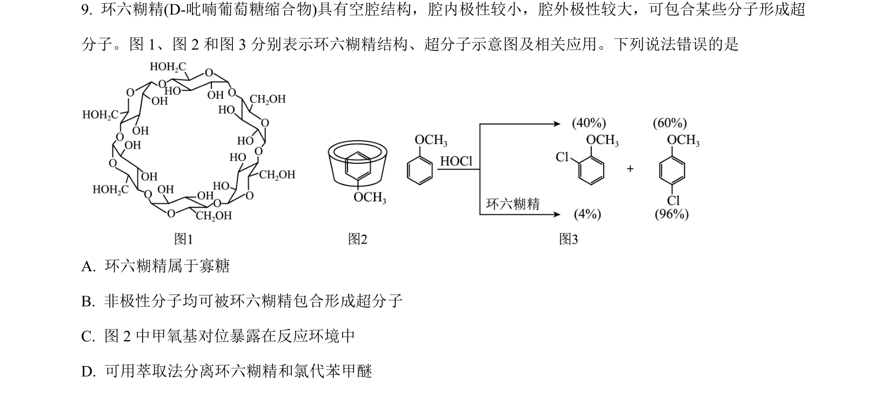
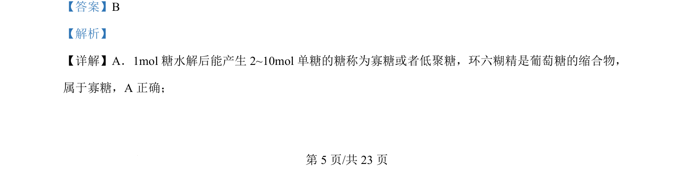
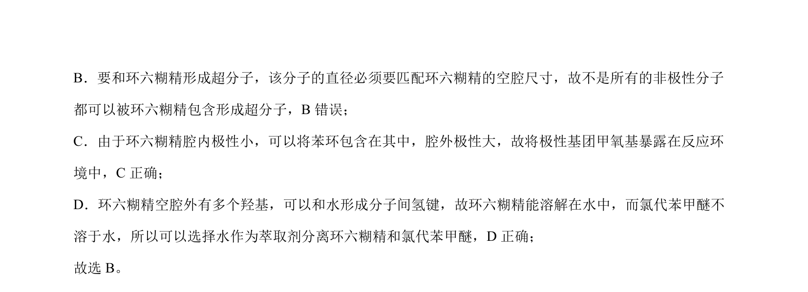

考点：寡糖 超分子 极性 氢键
寡糖
超分子
极性
氢键

本题考查环六糊精的结构与性质，涉及寡糖定义、超分子形成条件及溶解性判断。


📄 原 PDF 第 5 页：素材/真题/吉林/2008-2024·（吉林）化学高考真题/2024年高考化学试卷（辽宁）（解析卷）.pdf
素材/真题/吉林/2008-2024·（吉林）化学高考真题/2024年高考化学试卷（辽宁）（解析卷）.pdf
【答案】B 【解析】 【详解】A．1mol糖水解后能产生 2~10mol单糖的糖称为寡糖或者低聚糖，环六糊精是葡萄糖的缩合物， 属于寡糖，A 正确； 的